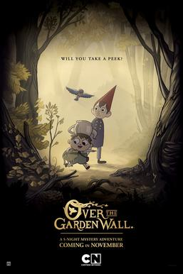

Home
Top Movies of the Year
Favorite Shows
Favorite Movies
My Top 5 favorite TV Shows
1. The Dark Crystal Age of Resistance
2. Over the Garden Wall

3. Swamp Thing
4. Invincible
5. Spawn
 4. Invincible
5. Spawn
4. Invincible
5. Spawn